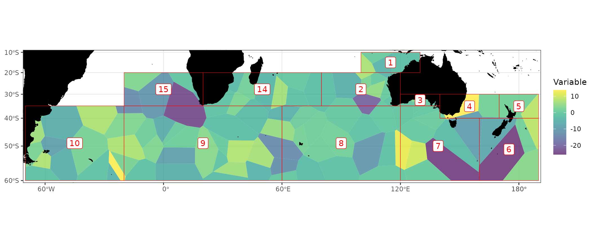
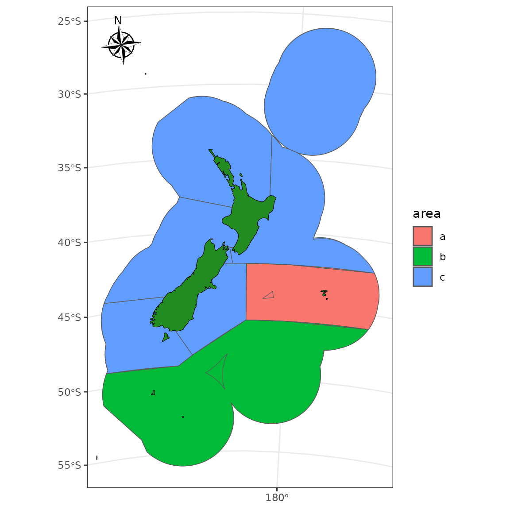

The nzsf package relies heavily on the R packages
ggplot2, dplyr, and sf. Maps can
be built up in layers in the same way as ggplot2.
# devtools::install_github(repo = "ropensci/rnaturalearthhires")
# library(rnaturalearthhires) # required for scale = "large" in ne_countries
library(rnaturalearth)
library(rnaturalearthdata)
library(nzsf)
library(tidyverse)
library(ggspatial)
library(viridis)
library(raster)
library(lwgeom)
library(patchwork)
library(stars)
library(ggnewscale)
theme_set(theme_bw() + theme(axis.title = element_blank()))CCAMLR
ggplot() +
geom_ccamlr("mpa", fill = "tomato", colour = "tomato", alpha = 0.25) +
geom_ccamlr("ssru") +
geom_ccamlr("land", fill = "black") +
geom_ccamlr("label") +
annotation_north_arrow(location = "tr", which_north = "true",
style = north_arrow_nautical, pad_y = unit(1, "cm")) +
annotation_scale(location = "tr", unit_category = "metric") +
coord_ccamlr()CCSBT
The nzsf package also includes functions for plotting
CCSBT management areas. In the example below I simulate 100 points,
generate a voronoi diagram around these points, then simulate values at
5000 points and sum the values of these points within the voronoi
polygons:
CCSBT3994 <- CCSBT %>% st_transform(proj_ccsbt()) %>%
st_union(by_feature = TRUE)
# Simulate some points within the areas
pts1 <- st_sample(CCSBT3994, size = 100) %>% st_sf()
pts2 <- st_sample(CCSBT3994, size = 5000) %>% st_sf() %>%
mutate(z = rnorm(1:n()))
# Sum up points within voronoi polygons
vri <- pts1 %>%
st_union() %>%
st_voronoi(envelope = NULL) %>%
st_collection_extract() %>%
st_cast() %>%
st_sf() %>%
mutate(id = 1:n()) %>%
st_join(pts2, join = st_contains, left = TRUE) %>%
group_by(id) %>%
summarise(z = sum(z)) %>%
st_intersection(CCSBT3994)
#> Warning: attribute variables are assumed to be spatially constant throughout
#> all geometries
ggplot() +
geom_sf(data = vri, aes(fill = z), colour = NA) +
scale_fill_viridis("Variable", alpha = 0.7, na.value = NA) +
# plot_depth(proj = 3994) +
geom_ccsbt("land", fill = "black", colour = "black") +
geom_ccsbt("area", colour = "red") +
geom_ccsbt("label", fill = "white", colour = "red") +
coord_ccsbt()
#> Warning: st_centroid assumes attributes are constant over geometries
SPRFMO
SPRFMO3832 <- SPRFMO %>% st_transform(crs = 3832)
world <- ne_countries(scale = "medium", returnclass = "sf") %>%
st_transform(crs = 3832)
ggplot() +
geom_sf(data = world, fill = "black", colour = "black") +
geom_sf(data = SPRFMO3832, aes(fill = factor(OBJECTID))) +
coord_sf() +
plot_clip(SPRFMO3832) +
theme_bw() +
theme(legend.position = "none")SIOFA
SIOFA3832 <- SIOFA %>% st_transform(crs = 3832)
ggplot() +
# geom_gebco(proj = 3832, downsample = 3) +
# geom_stars(data = bathy, downsample = 3) +
geom_sf(data = world, fill = "black", colour = "black") +
new_scale("fill") +
geom_sf(data = SIOFA3832, alpha = 0.5,
aes(fill = factor(SubArea), colour = factor(SubArea))) +
plot_clip(SIOFA3832) +
theme_bw() +
theme(legend.position = "none")New Zealand
Compare a plot of low resolution coastline to the
rnaturalearth package.
nz <- ne_countries(scale = "medium", country = "New Zealand",
returnclass = "sf") %>%
st_transform(crs = proj_nzsf()) %>%
st_crop(get_statistical_areas(area = "EEZ"))
#> Warning: attribute variables are assumed to be spatially constant throughout
#> all geometries
p1 <- ggplot() +
plot_coast(resolution = "1250k", fill = "black", colour = "black") +
plot_clip(x = "NZ")
p2 <- ggplot() +
geom_sf(data = nz, fill = "black", colour = "black") +
plot_clip(x = "NZ")
p1 + p2
An example that aggregates spatial features
aa <- nz_general_statistical_areas %>%
dplyr::select(Statistica) %>%
st_transform(crs = proj_nzsf()) %>%
st_union(by_feature = TRUE) %>%
mutate(area = case_when(
Statistica %in% c(401:412, "049", "050", "051", "052") ~ "a",
Statistica %in% 601:625 ~ "b",
TRUE ~ as.character("c")
)) %>%
group_by(area) %>%
summarize(geometry = st_union(geometry))
ggplot() +
geom_sf(data = aa, aes(fill = area)) +
plot_qma(qma = "LIN", fill = "transparent") +
# plot_statistical_areas(area = "stat area", fill = "transparent") +
plot_coast(resolution = "med", fill = "forestgreen", colour = "black") +
plot_clip("NZ") +
annotation_north_arrow(location = "tl", which_north = "true",
style = north_arrow_nautical)
Layers such as New Zealand marine reserves, depth countours, and
Quota Management Areas (QMAs) can be added easily with several of the
nzsf helper functions including
plot_marine_reserves, plot_depth, and
plot_qma. Maps can be restricted (e.g. to the North Island
only) using a bounding box generated using st_bbox from the
sf package:
# bbox <- get_coast() %>%
bbox <- nzsf::nz_coastlines_and_islands_polygons_topo_1500k %>%
st_transform(crs = proj_nzsf()) %>%
filter(name %in% c("North Island or Te Ika-a-Māui")) %>%
st_bbox()
ggplot() +
plot_depth(colour = "lightblue") +
plot_marine_reserves(fill = "red", colour = "red") +
plot_qma(qma = "CRA", fill = NA) +
plot_coast(resolution = "medium", fill = "grey", colour = NA) +
coord_sf(xlim = bbox[c(1, 3)], ylim = bbox[c(2, 4)]) +
annotation_north_arrow(location = "tr", which_north = "true",
style = north_arrow_nautical) +
annotation_scale(location = "br", unit_category = "metric")Adding labels can be done with:
sf_jma <- get_qma("JMA")
sf_coast <- get_coast() %>% st_combine() %>% st_make_valid()
lab <- st_difference(sf_jma, sf_coast) %>% st_point_on_surface()
#> Warning: attribute variables are assumed to be spatially constant throughout
#> all geometries
#> Warning: st_point_on_surface assumes attributes are constant over geometries
# lab <- st_difference(sf_jma, sf_coast) %>% st_centroid()
ggplot() +
plot_qma(qma = "JMA", fill = NA) +
plot_statistical_areas(area = "JMA", fill = NA) +
plot_coast(fill = "forestgreen", colour = NA) +
geom_sf_label(data = lab, aes(label = QMA)) +
plot_clip(x = "NZ") +
annotation_north_arrow(location = "tl", which_north = "true") +
annotation_scale(location = "br", unit_category = "metric")You can then add polygons, points, lines/arrows, and/or rasters to maps and change the map projection:
proj <- "+proj=longlat +datum=WGS84 +no_defs"
data("Gisborne_TToR_Habitats")
Gisborne_TToR_Habitats <- Gisborne_TToR_Habitats %>%
st_transform(crs = proj, check = TRUE)
data("Rocky_reef_National_NZ")
Rocky_reef_National_NZ <- Rocky_reef_National_NZ %>%
st_transform(crs = proj, check = TRUE)
bbox <- get_marine_reserves() %>%
st_transform(crs = proj, check = TRUE) %>%
filter(Name == "Te Tapuwae o Rongokako Marine Reserve") %>%
st_bbox()
ggplot() +
geom_sf(data = Rocky_reef_National_NZ, fill = "lightgrey", colour = NA) +
plot_depth(proj = proj, resolution = "med", size = 0.2, colour = "skyblue") +
geom_sf(data = Gisborne_TToR_Habitats, aes(fill = Habitat), colour = NA) +
scale_fill_viridis_d(alpha = 0.5) +
plot_marine_reserves(proj = proj, fill = NA) +
plot_coast(proj = proj, resolution = "med", fill = "black", colour = NA) +
coord_sf(xlim = bbox[c(1, 3)], ylim = bbox[c(2, 4)]) +
labs(title = "Te Tapuwae o Rongokako Marine Reserve")Simulate some points around Stewart Island.
# stewart <- get_coast() %>%
stewart <- nzsf::nz_coastlines_and_islands_polygons_topo_1500k %>%
filter(name == "Stewart Island/Rakiura") %>%
st_transform(crs = proj_nzsf()) %>%
st_buffer(dist = 4500)
pts <- st_sample(stewart, size = 5000) %>%
st_sf() %>%
mutate(z = rnorm(1:n()))
p1 <- ggplot() +
plot_depth(resolution = "med", size = 0.2, colour = "grey") +
geom_sf(data = pts, aes(colour = z)) +
plot_coast(resolution = "large", fill = "black", colour = NA) +
annotation_north_arrow(location = "tl", style = north_arrow_nautical) +
plot_clip(x = stewart) +
labs(colour = "Points", title = "Rakiura")
p2 <- ggplot() +
plot_depth(resolution = "med", size = 0.2, colour = "grey") +
plot_raster(data = pts, field = "z", fun = mean, nrow = 50, ncol = 50) +
scale_fill_viridis("Raster", alpha = 0.8, option = "plasma") +
plot_coast(resolution = "large", fill = "black", colour = NA) +
annotation_north_arrow(location = "tl", style = north_arrow_nautical) +
plot_clip(x = stewart) +
labs(title = "Rakiura")
p1 + p2
eez <- get_statistical_areas("EEZ", proj = 4326) %>% st_shift_longitude()
r <- get_standard_grid(cell_size = 1/1000, bounding_box = st_bbox(eez),
return_raster = FALSE, crs = 4326)
#> Warning in get_standard_grid_origin(cell_size = cell_size, bounding_box =
#> bounding_box, : The chosen grid size does not conform to the standard grid
#> specification, consider setting cell_size to one of: 0.25, 0.5, 1, 2, 4, 8, 16,
#> 32, 64, 128, 256, 512, 1024.
ggplot(data = r) +
geom_sf(fill = "red", alpha = 0.1) +
plot_coast(proj = 4326) +
plot_clip(eez, proj = 4326) +
theme_bw()